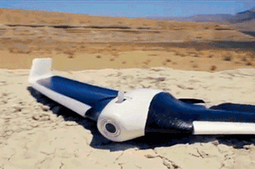
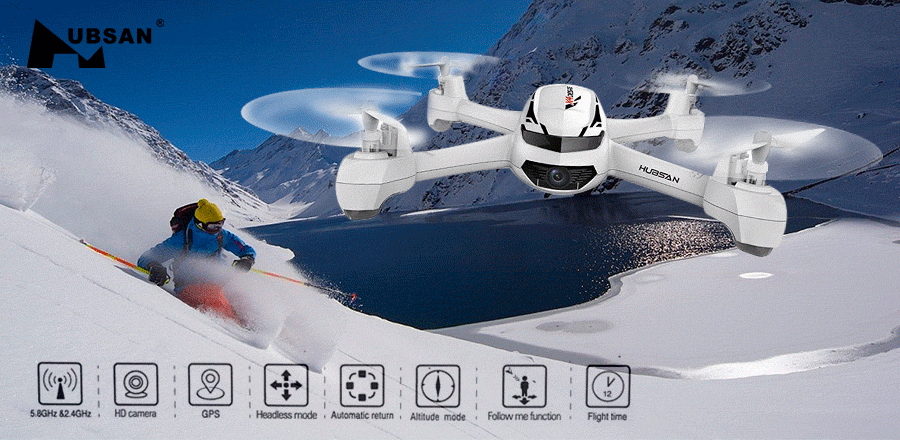
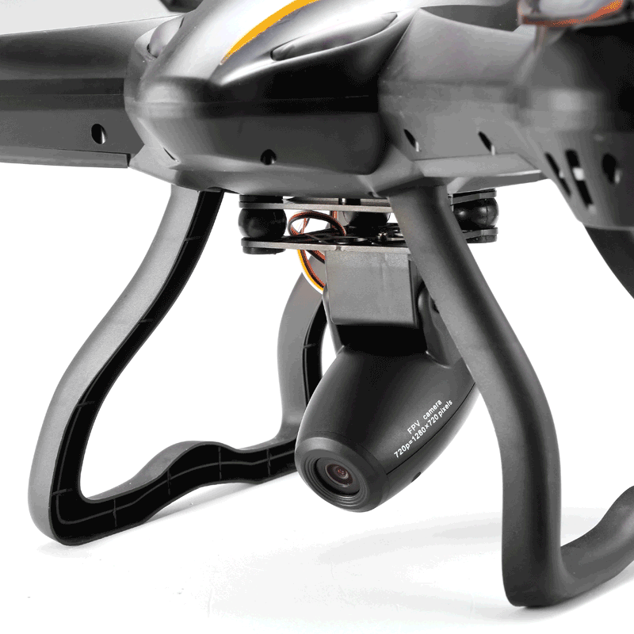
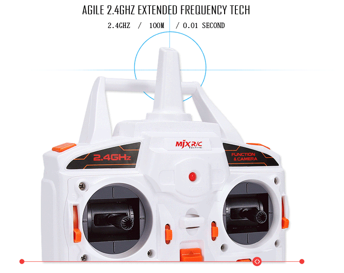

Preguntas previas a la compra de un dron
Antes de lanzarte a la compra de tu nuevo cuadricóptero, nos hemos planteado un par de preguntas que podrían ayudarte a elegir las características básicas con las que tu nuevo «juguete» debería contar.
- ¿Con qué finalidad quiero volar?
- ¿Me gustaría volar en áreas de interior o siempre al aire libre?
- ¿Es importante que la batería tenga una larga duración?
- ¿Qué funciones especiales me gustaría que tuviera mi modelo?
- ¿Es importante que mi dron disponga de una cámara integrada? ¿Debe tratarse de una cámara HD?
- ¿Me gustaría experimentar el vuelo a través de unas gafas FPV?
- ¿Que requisitos debería cumplir el mando a distancia?
- ¿Necesito un sistema de GPS integrado?
- ¿Cuál debe ser el precio de mi dron?
¿Qué es importante a la hora de comprar un dron?
Entretanto existe una gran cantidad de modelos diferentes de multicópteros, puesto que en los últimos años ha tenido lugar unboom en este sector. Debido a la gran demanda, ha aumentado la oferta evidentemente, por lo que en estos dias se encuentra a disposición de los aficionados una amplia oferta.
Algunos de estos modelos son especialmente recomendados para principiantes. Se caracterizan por estar diseñados para la diversión casi desde el momento en el que el dron echa a volar por primera vez. Son sencillos de volar y permiten que el piloto se vaya acostumbrando a la sensación de volar de una forma cómoda y entretenida. Destacan por ser más robustos y resistentes a golpes y caidas que suelen suceder especialmente a los más «novatos». Si los pilotos expertos vuelan este tipo de objetos, es posible echen de menos un reto, una mayor velocidad en el vuelo o la posibilidad de realizar alguna maniobra complicada. Especialmente para ellos hay también algunas posibilidades en el mercado que les permitirán desarrollar sus habilidades y disfrutar de las funciones avanzadas de estos objetos voladores. Hace no demasiado tiempo han surgido incluso versiones que pueden ser dirigidas desde el propio smartphone o una tablet.
Características generales de los drones
- Sistema de funcionamiento de un cuadricóptero:  Este tipo de multicópteros son muy diferentes a los helicópteros a los que muchos estaban acostumbrados. Se trata de objetos voladores que no tienen un motor principal y un motor trasero, sino que cuentan con cuatro hélices. Mediante la variación del giro de dichas hélices se puede controlar el movimiento de dicho aparato hacia arriba y hacia abajo, o hacia adelate y hacia atrás. En un primer momento, esto puede parecer un tanto complicado. Sin embargo, existen modelos especialmente diseñados para principiantes, es decir, para personas que todavía no han tenido nada que ver con el mundo del aeromodelismo. Por otro lado, también existen versiones, que cuentan con más de cuatro hélices, dependiendo del número de hélices pueden tratarse de tricópteros (tres brazos), cuadricópteros (cuatro brazos), hexacópteros (seis brazos) y octocópteros (ocho brazos) entre otros.
- El alcance de un dron: Esto va a sorprender seguramente a muchos lectores, ya que el alcance de un dron puede llegar a 2,5 Km. Esto dependerá del motor y de la bateria del modelo, entre otras muchas cosas. No obstante, es importante tener en cuenta a la hora de comprar un multicóptero de estas características, que la señal de video no llega tan lejos, sino que se queda en una distancia de 500 metros. Los modelos para principiantes suelen tener un alcance mucho menor, entre otras cosas, porque durante los primeros vuelos es recomendable volar el dron cerca para tenerlo controlado y a la vista en todo momento.
- Tiempo de vuelo de un cuadricóptero: Este factor va a depender en gran medida de la bateria con la que cuente cada artículo. Dentro de la gama baja-media podemos encontramos una gran oferta de modelos cuyo tiempo de vuelo oscila entre los 5 y los 12 minutos. En estos casos, el precio de las baterias suele ser mucho más económico que si se tratase de un aparato de gama superior, los cuales suelen alcanzar los 20 minutos de tiempo de vuelo. Por lo que siempre recomendamos a los pilotos obtener un par de baterías de recambio.
- Minidrones: versiones pequeñas pero potentes y muy a tener en cuenta. A consecuencia del notable desarrollo del mercado, han surgido incontables versiones y con diversas características a disposicion de los pilotos. Puesto que la cantidad de modelos se ha vuelto tan inmensa, ha sido necesario que los distribuidores y las marcas elaborasen una categorización de los mismos. Gracias a ésto ahora podemos distinguir entre mini o nano drones y artículos de tamaño normal. Un nano tiene unas medidas de entre 50 y 150 milímetros. Todo lo demás pasará a considerarse de tamaño estándar. Debido al desarrollo de los componentes electrónicos, la tendencia parece indicar que estos aparatos van a hacerse cada vez más y más pequeños. Estas mini versiones superan en ocasiones a sus «hermanos mayores» en cuanto a equipación y eficiencia. Además, es posible manejarlos en zonas de interior con mayor facilidad y especialmente recomendados a pilotos que vuelan en naves, pabellones o zonas cubiertas en general. La segunda diferencia destacable se encuentra en el peso de estos mini drones. Con mayor probabilidad, el peso de un aparato de menor tamaño va a ser inferior al de un multicóptero mayor. Por ello, estos nanos van a ser mucho más sencillos para transportar y te permiten llevarlo casi a todos lados contigo.
- Retransmision con FPV, ¿qué es eso?  FPV significa en este caso «first person view» y hace referencia a la perspectiva subjetiva. En realidad, podríamos hablar de first person view ya desde el momento en el que la cámara realiza una grabación en primer lugar y podemos ver el video una vez terminado el vuelo. Pero por otro lado, se hace necesario diferenciar entre el FPV activo y el FPV pasivo. En este caso, las imágenes tomadas serán retransmitidas en directo al piloto, por lo que estaremos hablando de un FPV-activo. Para ello existen dos posibilidades, o bien a través de un monitor-FPV o a traves de unas gafas FPV. De este modo, es posible el control de la grabacion del vuelo de una forma simultánea. Cuando las imágenes grabadas pueden verse únicamente al extraer la tarjeta de memoria de la cámara, hablamos de FPV-pasivo.
Drones baratos a partir de los 50 euros
Como en casi todas las cosas, no existe límite de precio hacia arriba. Si el aparato se va a utilizar de forma profesional, existen drones con cámara HD cuyo precio final alcanza los 40.000 euros. No obstante, para un uso privado, el precio no debería ser tan elevado. Existen también versiones mucho más baratas, lo que ha ayudado indudablemente a a despertar el interés por estos objetos voladores.
En la actualidad se pueden comprar multicópteros para principiantes con un precio entre 50 y 100 €, como es el caso del Syma X5C Explorer o del JJRC H8C.
Los análisis de las últimas novedades en el mundo dron.
En esta página web vas a descubrir todo lo que necesitas saber sobre la compra, construcción y vuelo de un drone, accesorios y su utilización. Además, te vamos a informar sobre las novedades en el mundo de los llamados multicópteros, es decir, tricópteros, cuadricópteros, hexacópteros y octocópteros.
Todos los nuevos modelos que las marcas más punteras en este sector como DJI,Cheerson, Revell, XciteRC, JJRC, Hubsan, Syma, Nine Eagles, Parrot , Walkera, UDI…
Pese a que la legislación es bastante clara respecto a dónde se puede y dónde no está permitido volar un drone, estos gadgets se han convertido en un regalo deseado y con cada vez más opciones. Si vas a comprar un drone, atento a nuestra guía de compras con consejos sobre cómo elegir el drone más adecuado y los mejores modelos de entre 20 y 2500 euros.
¿Qué debes de tener en cuenta antes de comprar un dron?
Acertar al comprar un drone no depende exclusivamente de nuestro presupuesto. Debemos conocer qué tipo de drone y modelo concreto se ajusta a lo que pretendemos conseguir, así como prestar atención a la legislación vigente sobre el uso de drones.
Tipos de drones
A la hora de referirnos a los drones, lo habitual es hacerlo como un vehículo aéreo no tripulado. Son la inmensa mayoría, pero hay que tener en cuenta que ya hay un catálogo importante de drones terrestres e incluso acuáticos que cubren principalmente el nicho de mercado de entrada y ocio.
Si nos referimos a los aéreos, los de más recorrido, podemos diferenciar entre drones recreacionales/ocio, que destinaremos principalmente como elemento de vuelo por puro ocio, y los que, gracias a su cámara de calidad, podrían llevar a cabo tareas de toma de vídeos y fotografías a un nivel incluso profesional.
Otra clasificación técnica pero muy importante es la que queda determinada por el número de rotores del drone. En la gama de entrada lo habitual es encontrarse con modelos de cuatro rotores, habitualmente llamados cuadricópteros. Son modelos sencillos, ideales para aprender a volarlos pues se dejan controlar mejor gracias a sistemas de vuelo gestionado, y que se deben usar principalmente en interiores.
Si nunca antes has volado un drone te conviene optar por un modelo asequible y con el que mejorar tu destreza y manejo del mismo, para luego pasar a modelos que te ofrezcan más prestaciones pero que también son una inversión importante
Los drones más completos y avanzados, que ya admiten un rango de vuelo más amplio y vuelo seguro en exteriores, suelen ampliar los rotores a seis e incluso a ocho, además de incluir sistemas de estabilización muy mejorados y gestión del vuelo en tiempo real, a veces incluso apoyados en sistemas de posicionamiento GPS.
Como ya te hemos contado, tú mismo puedes montarte tu propio drone, especialmente si es para carreras. Pero lo habitual sigue siendo que quieras un modelo de drone de los llamados RTF o listos para volar. Será sacar de la caja y poder empezar la diversión.
Datos importantes: alcance, autonomía y cámara
De la ficha técnica de un drone has de estar muy pendiente de lo que afecta al alcance y la autonomía. Y si dentro de tus planes está poder tomar fotos o vídeos, no vale con cualquier cámara.
El alcance de un drone determina hasta qué altura o distancia vas a poder operarlo. La mayoría de modelos se detendrán o regresarán al punto de partida cuando se pierda contacto con el smartphone o mando RF, pero seguro que quieres un modelo con un alcance que te permite más diversión y oportunidades de vuelo. Incluso en los modelos más asequibles que queramos volar en exteriores, al menos 50 metros de alcance deberemos asegurarnos para que la experiencia no sea limitada. Si solo aspiramos a volar en interiores, es una característica menor.
A no ser que el drone que compres lo quieras solo para vuelo en interiores, el alcance es clave tanto para la seguridad como diversión y no limitar la experiencia de vuelo
.jpg)
Cuando el vuelo de drones te lo tomas más en serio, la autonomía se une a la ecuación para acertar al comprarlo. Y lamentablemente los drones actuales, incluso los profesionales, no ofrecen una autonomía de vuelo que nos deje satisfechos. Dependiendo del modelo podremos movernos entre 10 y 30 minutos, pero cuenta con una media de 15 minutos con mucha suerte. Por ello es muy importante contar con baterías de repuesto y un cargador de calidad que permita una carga segura a la vez que lo más rápida posible.
El control de los drones se suele realizar por medio de mandos/emisoras RF. Busca la compatibilidad del modelo si no viene uno incluido en el drone que quieras comprar, y no escatimes en el presupuesto de este elemento si pretendes tomarte en serio tu afición porque de ellos dependerá un control del drone más preciso, fiable y cómodo. Y siempre lo podrás usar con drones más avanzados que vayas comprando. Los drones que se manejan con el smartphone pecan de poco alcance al depender de una red Wifi que crean para enlazar con el drone, pero a cambio se valen de sensores del propio smartphone para facilitar los primeros vuelos, así como la configuración de todo el sistema.
Drones con cámara hay desde apenas 50 euros, pero no te dejes engañar: con ellos no podrás conseguir las imágenes y vídeos que ves en Youtube
Actualmente, lo que suele diferenciar drones de gama alta de los de iniciación es la cámara. Aunque hay modelos de bajo coste que incluyen cámara, apenas se podrán usar para vuelo en primera persona. Los drones que permiten grabar vídeo o tomar fotografías con calidad incluyen sistemas avanzados de estabilización basados en un gimbal, cámaras con calidad 1080p o 4K, e incluso sistemas para acoplar nuestras propias cámaras.